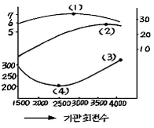
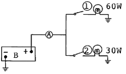
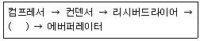

자동차정비기능사 (2004-02-01 기출문제)
1과목: 자동차공학
1. 보기와 같은 기관 성능곡선도에서 연료소비율이 가장 낮은 곳을 가르키는 숫자 위치는?

- ⑴
- ⑵
- ⑶
- ⑷
(정답률: 82%)

2. 지시마력이 50PS이고 제동마력이 40PS일 때 기계효율은?
- 70%
- 80%
- 125%
- 200%
(정답률: 68%)
3. 점화순서가 1-3-4-2인 4행정 기관의 3번 실린더가 압축행정을 할 때 1번 실린더는?
- 흡입 행정
- 압축 행정
- 폭발 행정
- 배기 행정
(정답률: 69%)
4. 브레이크(brake) 장치 중 듀어서보 형식에서 전진할 때 앞쪽의 슈를 무엇이라고 하는가?
- 서보슈
- 후진슈
- 1차슈
- 2차슈
(정답률: 67%)
5. 기동전동기 무부하 시험을 할 때 필요 없는 것은?
- 전류계
- 저항 시험기
- 전압계
- 회전계
(정답률: 61%)
6. "회로 내의 어떤 한 점에 유입한 전류의 총합과 유출한 전류의 총합은 같다."는 법칙은?
- 렌쯔의 법칙
- 앙페르의 법칙
- 뉴톤의 제 1법칙
- 키르히호프의 제 1법칙
(정답률: 79%)
7. 디젤 노크를 방지하는 대책으로 적합하지 않은 것은?
- 발화성이 좋은 연료를 사용하여 착화지연 기간이 단축 되도록 한다.
- 착화지연 기간 중 연료의 분사량을 조절한다.
- 압축 온도를 높인다.
- 압축비를 낮게 하여야 한다.
(정답률: 68%)
8. 다음 중 디젤기관의 연료분사 조건이 아닌 것은?
- 무화가 잘되고, 분무입자가 적고 균일할 것
- 분무가 잘 분산될 것
- 한 번에 많은 양을 분사할 것
- 분사의 시작과 그침이 확실할 것
(정답률: 85%)
9. 기관 작동 중 냉각수의 온도가 83℃를 나타낼 때 절대 온도로 환산하면 몇 도인가?
- 563°K
- 456°K
- 356°K
- 263°K
(정답률: 67%)
10. TPS(스로틀 포지션 센서)에 대한 설명으로 틀린 것은?
- 가변 저항식이다.
- 운전자가 가속페달을 얼마나 밟았는지 감지한다.
- 급가속을 감지하면 컴퓨터가 연료분사 시간을 늘려 실행시킨다.
- 분사시기를 결정해 주는 가장 중요한 센서이다.
(정답률: 48%)
11. 브레이크슈의 리턴스프링에 관한 설명이다. 가장 거리가 먼 것은?
- 브레이크슈의 리턴스프링이 약하면 휠 실린더 내의 잔압이 높아진다.
- 브레이크슈의 리턴스프링이 약하면 드럼을 과열시키는 원인이 될 수도 있다.
- 브레이크슈의 리턴스프링이 강하면 드럼과 라이닝의 접촉이 신속히 해제된다.
- 브레이크슈의 리턴스프링이 약하면 브레이크슈의 마멸이 심해진다.
(정답률: 57%)
12. 마스터 실린더에서 피스톤 1차 컵의 하는 일은?
- 오일 누출 방지
- 유압 발생
- 잔압 형성
- 베이퍼록 방지
(정답률: 60%)
13. 12V의 배터리에 12V용 전구 2개를 그림과 같이 결선하고 ①, ②스위치를 연결하였을 때 A에 흐르는 전류는 얼마인가?

- 6.5A
- 65A
- 7.5A
- 75A
(정답률: 62%)
14. 외부 온도에 따라 저항값이 변하는 소자로서 수온센서 등 온도 감지용으로 쓰이는 반도체는?
- 게르마늄(germanium)
- 실리콘(silicone)
- 서미스터(thermistor)
- 인코넬(inconel)
(정답률: 82%)
15. 엔진에 흡입되는 공기량을 검출하기 위한 센서는?
- O2
- TPS
- ISC
- AFS
(정답률: 66%)
16. 외부로부터 빛을 받으면 전류를 흐를 수 있게 하는 감광소자는?
- 사이리스터
- 압전소자
- 제너 다이오드
- 포토트랜지스터
(정답률: 60%)
17. 차동기어장치를 바르게 설명한 것은?
- 필요시 양쪽 구동 바퀴에 회전 속도의 차이를 만드는 장치이다.
- 회전력을 앞 차축에 전달하고, 동시에 감속하는 일을 한다.
- 회전하는 두 축이 일직선상에 있지 않고 어떤 각도를 가지고 있는 경우, 두 축 사이에 동력을 전달하기 위한 장치이다.
- 변속기로부터 최종 감속 기어까지 동력을 전달하는 축을 말한다.
(정답률: 48%)
18. 클러치의 구비조건이 아닌 것은?
- 동력전달이 확실하고 신속할 것
- 방열이 잘되어 과열되지 않을 것
- 회전부분의 평형이 좋을 것
- 회전관성이 클 것
(정답률: 84%)
19. 실린더 행정이 7cm이고 피스톤 지름 80mm 인 4기통 엔진의 총배기량은 약 몇 cc 인가?
- 1102cc
- 12⑤cc
- 1407cc
- 18⑤cc
(정답률: 58%)
20. 브레이크 시스템 내의 잔압을 두는 이유와 가장 관계가 적은 설명은?
- 제동의 늦음을 방지하기 위해
- 베이퍼 록(vapor lock)현상을 방지하기 위해
- 휠 실린더 내의 오일 누설을 방지하기 위해
- 브레이크 오일의 증발을 방지하기 위해
(정답률: 49%)
2과목: 자동차정비 및 안전기준
21. 자동차 안전기준에서 자동차의 길이는 얼마를 초과해선 안 되는가? (단, 연결자동차는 제외)
- 12미터
- 13미터
- 15미터
- 16.7미터
(정답률: 52%)
22. 다음 중 자동차의 등광색이 적색이 아닌 것은?
- 제동등
- 후미등
- 후부반사기(형광부)
- 차폭등
(정답률: 60%)
23. 기관의 축출력 측정시 측정항목이 아닌 것은?
- 연료소비량
- 원동기 회전속도
- 흡기 온도
- 냉각액
(정답률: 68%)
24. 탱크로리 화물자동차의 뒷면에 표시하지 않아도 되는 것은?
- 차량중량
- 최대적재량
- 최대적재용적
- 적재물품명
(정답률: 51%)
25. 속도제한장치와 운행 기록계를 동시에 설치하여야 하는 자동차는?
- 고압가스운송용 탱크로리 자동차
- 쓰레기 운반 전용 화물자동차
- 45인승 자가용 승합자동차
- 차량 총중량이 16톤인 일반형 화물자동차
(정답률: 68%)
26. 와이어로프로 동일중량의 물건을 매달아 올릴 때 로프에 걸리는 인장력이 가장 적은 로프의 각도는?
- 45°
- 85°
- 30°
- 60°
(정답률: 48%)
27. 강산, 알카리 등의 액체를 취급할 때 다음 중 가장 적합한 복장은?
- 가죽으로 만든 옷
- 면직으로 만든 옷
- 나일론으로 만든 옷
- 고무로 만든 옷
(정답률: 64%)
28. 실린더 파워 밸런스 시험시 손상에 가장 주의하여야 하는 부품은?
- 산소센서
- 점화플러그
- 점화코일
- 삼원촉매
(정답률: 46%)
29. 해머작업을 할 때의 주의사항으로 틀린 것은?
- 타격면이 조금 찌그러진 것은 사용하여도 좋다.
- 손잡이는 튼튼한 것으로 사용한다.
- 기름이 묻은 손이나 장갑을 끼고 작업하지 않는다.
- 타격 가공하려는 것을 보면서 작업한다.
(정답률: 83%)
30. 기계를 점검시 기관을 운전 상태로 점검해야 할 것이 아닌 것은?
- 클러치의 상태
- 매연상태
- 기어의 소음상태
- 급유상태
(정답률: 74%)
31. 일반적으로 다음 동력전달장치 중에서 재해가 가장 많이 나타날 수 있는 장치는?
- 기어
- 커플링
- 벨트
- 차축
(정답률: 65%)
32. 다음 중 보안경을 착용하여야 하는 작업은?
- 기관 탈착 작업
- 납땜 작업
- 변속기 탈착 작업
- 전기배선 작업
(정답률: 57%)
33. 가스 용접의 안전작업 중 적합치 않은 것은?
- 토치에 점화시킬 때에는 산소밸브를 먼저 열고 다음에 아세틸렌 밸브를 연다.
- 산소누설 시험에는 비눗물을 사용한다.
- 토치 끝으로 용접물의 위치를 바꾸면 안 된다.
- 가스를 들이 마시지 않도록 한다.
(정답률: 71%)
34. 드릴 작업시 재료 밑의 받침은 무엇이 적당한가?
- 나무판
- 연강판
- 스테인레스판
- 벽돌
(정답률: 65%)
35. 기관 기동시 화재가 발생하였다. 다음 중 소화 작업으로 가장 안전한 방법인 것은?
- 기관을 가속하여 팬의 바람으로 끈다.
- 물을 붓는다.
- 자연적으로 모두 연소될 때 까지 기다린다.
- 점화원을 차단한다.
(정답률: 85%)
36. 다음 중 앵글라이히 장치의 작용에 대한 설명으로 가장 적합한 것은?
- 제어 랙의 위치를 변경시켜 분사량을 적게 한다.
- 동일한 제어 랙의 위치에서 기관의 흡입 공기에 알맞는 연료를 분사한다.
- 제어 랙의 위치를 변경시켜 분사량을 크게 한다.
- 막판의 위치를 조정하여 분사량을 알맞게 한다.
(정답률: 67%)
37. 다음 중 아마츄어(armature)시험기로 시험할 수 없는 것은?
- 코일의 단락
- 코일의 접지
- 코일의 저항
- 코일의 단선
(정답률: 58%)
38. 기계식 클러치가 미끄러지는 원인이 아닌 것은?
- 클러치 페달의 유격이 작다.
- 클러치판에 오일이 묻어있다.
- 압력 스프링이 약하다.
- 릴리스 레버가 마모되었다.
(정답률: 47%)
39. 축전지의 용량시험에서 부하 조정 손잡이는 축전지 용량의 몇 배가 되도록 조절해 두어야 하는가?
- 1배
- 2배
- 3배
- 4배
(정답률: 56%)
40. 가솔린 연료 분사기(Injector)의 분사형태에서 순차분사는 어떤 센서의 신호에 동기되어 분사하는가?
- 산소 센서
- 에어플로워 센서
- 크랭크각 센서
- 맵 센서
(정답률: 57%)
3과목: 안전관리
41. 삼원 촉매장치(Catalytic Converter)에서 정화 되어지는 가스가 아닌 것은?
- NOx
- CO
- HC
- O2
(정답률: 76%)
42. 어떤 4 사이클 엔진이 2400rpm 으로 회전하고 있을 때, 제 1번 실린더의 배기 밸브는 1초간 몇 번 열리는가?
- 20번
- 200번
- 2400번
- 4800번
(정답률: 43%)
43. 다음 설명 중 틀린 것은?
- 습식 라이너의 상면을 실린더 상면보다 돌출시켜 조립하는 것은 열전도를 좋게 하기 위함이다.
- 전류식 오일여과기에는 바이패스 밸브가 설치되어 있다.
- 가압식 라디에이터(radiator) 캡의 압력 밸브스프링이 소손하면 냉각수에 기포가 발생하기 쉽다.
- 청정되지 않은 우물물을 냉각수로 사용하면 잠재과열을 일으킬 염려가 있다.
(정답률: 55%)
44. 자동차에서 슬립조인트(slip joint)가 있는 이유는?
- 회전력을 직각으로 전달하기 위해서
- 출발을 원활하게 하기 위해서
- 추진축 길이 방향의 변화를 주기 위해서
- 진동을 흡수하기 위해서
(정답률: 65%)
45. 유압식 브레이크의 공기빼기 작업 중 부적당한 것은?
- 공기는 에어블리드 밸브에서 뺀다.
- 일반적으로 마스터 실린더에서 제일 먼 곳의 휠실린더부터 행한다.
- 마스터 실린더에 브레이크 오일을 보급하면서 행한다.
- 브레이크 파이프를 떼어내고 행한다.
(정답률: 61%)
46. 차동장치 링기어의 흔들림을 측정하는데 사용되는 것은?
- 디그니스 게이지
- 다이얼 게이지
- 마이크로미터
- 실린더 게이지
(정답률: 59%)
47. 토-인(to-in)측정에 대한 설명으로 부적당한 것은?
- 토-인 측정은 차를 수평한 장소에 직진상태에 놓고 행한다.
- 토-인의 조정은 타이로드로 행한다.
- 토-인의 측정은 타이어의 중심선에서 행한다.
- 토-인의 측정은 잭(jack)으로 차의 전륜을 들어 올린 상태에서 행한다.
(정답률: 71%)
48. 다음은 브레이크 오일이 갖추어야 할 조건 설명이다. 적당치 않은 것은?
- 비점이 높아 베이퍼록을 일으키지 않을 것
- 윤활성이 있을 것
- 알맞는 점도를 가지고 온도에 대한 점도 변화가 작을 것
- 빙점이 낮고 인화점이 낮을 것
(정답률: 70%)
49. 크랭크축의 축방향 움직임을 점검한 사항이다. 다음 중 틀린 것은?
- 축방향의 움직임은 보통 0.3mm가 한계수리치수이다.
- 크랭크축을 한쪽으로 밀고 마이크로미터로 측정한다.
- 규정값 이상이면 스러스트 베어링을 교환한다.
- 축방향에 움직임이 크면 소음이 발생하고 실린더 피스톤 등에 편마멸을 일으킨다.
(정답률: 56%)
50. 실린더 치수 내경과 행정이 78 × 95(mm)인 V8기통 기관의 총배기량은 약 몇 cm3 인가?
- 약 454cm3
- 약 3630cm3
- 약 4630cm3
- 약 1820cm3
(정답률: 53%)
51. 납축전지가 완전히 충전된 상태에서 (+)극판은?
- PbO2
- Pb
- PbO4
- H2SO4
(정답률: 46%)
52. 구동바퀴가 자동차를 미는 힘을 구동력이라 하며 이 때 구동력의 단위는?
- kgf
- m-kgf
- ps
- kgf·m/sec
(정답률: 66%)
53. 가솔린 분사장치의 연료 증량 보정과 관계없는 부품은?
- 수온센서
- 흡기온도 센서
- 스로틀 위치 센서
- 진공 스위치
(정답률: 63%)
54. DLI(무배전기 점화) 방식의 종류에 해당되지 않는 것은?
- 독립점화형 전자 배전 방식
- 동시점화형 코일 분배방식
- 동시점화형 다이오드 분배방식
- 로터 접점형 배전방식
(정답률: 56%)
55. 점화 플러그에 불꽃이 튀지 않는 이유 중 틀린 것은?
- 파워 TR 불량
- 점화코일 불량
- 발전기 불량
- ECU 불량
(정답률: 51%)
56. 전자제어식 자동변속기 내부에 장착된 솔레노이드 밸브가 아닌 것은?
- 댐퍼클러치 컨트롤 솔레노이드 밸브
- 속도조절 솔레노이드 밸브-A
- 속도조절 솔레노이드 밸브-B
- 킥다운 솔레노이드 밸브
(정답률: 56%)
57. 트랜지스터의 대표적 기능으로 릴레이와 같은 작용을 하는 것을 무엇이라 하는가?
- 스위칭 작용
- 채터링 작용
- 정류 작용
- 상호 유도 작용
(정답률: 65%)
58. 타이어의 트래드 패턴의 필요성이다. 가장 관계가 먼 것은?
- 타이어 내부의 열을 발산한다.
- 트래드에 생긴 절상 등의 확대를 방지한다.
- 구동력이나 선회능력을 감쇠시킨다.
- 타이어의 옆방향, 전진 방향의 미끄럼을 방지한다.
(정답률: 66%)
59. 전자제어 엔진의 특징이 아닌 것은?
- 유해 배기가스 감소한다.
- 연료소비량이 감소한다.
- 오일소비량이 감소한다.
- 출력성능이 향상된다.
(정답률: 49%)
60. 다음은 에어컨 냉매가 순환하는 과정이다. 보기의 괄호 안에 들어갈 용어에 해당되는 것은?

- 진공
- 팽창밸브
- 메니폴드
- 냉동오일
(정답률: 73%)